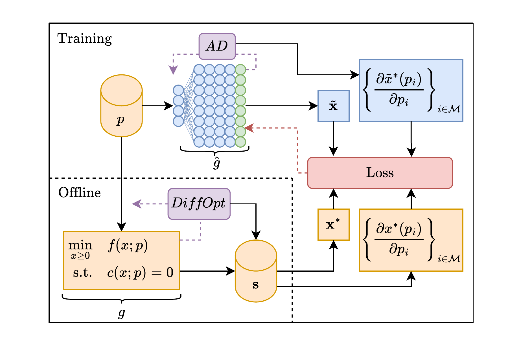
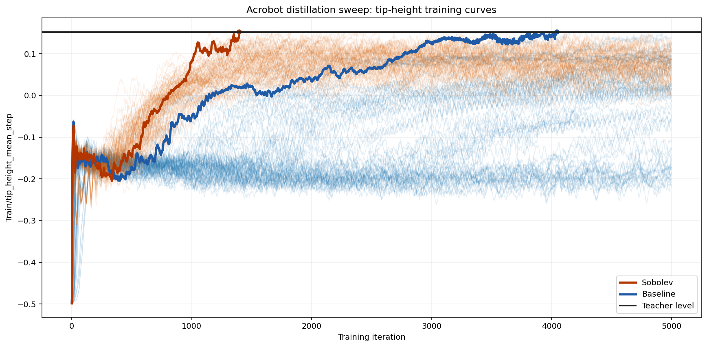

NeurIPS 2026 Optimization learning
Masked Sobolev Training for Feasibility-Reliable Optimization Proxies
Learn fast optimization proxies from solver decisions and a sparse, changing subset of their sensitivities.
1 Georgia Tech2 PSR3 Los Alamos National Laboratory
15–33%
Lower mean infeasibility
Across three AC power flow networks
0.07–0.22%
Small optimality gaps
For the reported power flow proxies
2.5×
Fewer training iterations
To 95% reference performance in Acrobot
The problem
Accurate predictions are only part of the story.
Optimization proxies replace repeated constrained optimization solves with a neural network’s forward pass. But a small prediction error can still produce an infeasible decision. The challenge grows when a changing active constraint set makes local behavior difficult to learn.
We augment value supervision with randomly selected solver sensitivities. The mask controls how many derivative conditions enter together, giving the proxy local geometric information while avoiding dense matching at every update. The benefit depends on whether those local sensitivities remain informative between samples.
The method
Values, sensitivities,
and a changing mask.
The solver supplies the targets offline. During training, automatic differentiation provides the proxy’s corresponding derivatives.

Obtain local solver information
For each sampled problem input, collect a reference decision and the local sensitivities of the selected solution map.
Match a sparse subset
At each update, uniformly sample Jacobian entries and match the proxy’s corresponding derivatives. Resampling exposes it to different entries over training.
Control density and weight separately
Normalize by the number of retained entries. Mask density controls simultaneous matching conditions; the Sobolev weight λ controls the derivative term’s strength.
Uniform fixed-size sampling gives an unbiased estimate of the full mean-squared Jacobian loss. The mask controls how many conditions enter each update; it does not identify or filter unreliable derivatives.
The evidence
Where sensitivities help.
And where they help less.
Three settings connect the quality of local sensitivity information to the behavior of the learned proxy.
Better feasibility with small objective gaps
Mean absolute infeasibility decreases on all three networks. The optimality gap increases on two, making the operating tradeoff explicit.
The objective tradeoff
| Network | Value-only | Sobolev |
|---|---|---|
| IEEE-300 | 0.02% | 0.22% |
| PEGASE-1k | 0.07% | 0.15% |
| RTE-6k | 0.07% | 0.07% |
Across test cases, Sobolev matches or improves maximum constraint violations in over 85% of cases.
Sparse supervision matters.
On IEEE-300, dense matching has 5.2× higher INF than the 5% mask, despite a smaller objective gap.
These are separate configurations from the three-network comparison above.
| Density | MSE | Gap | INF ↓ |
|---|---|---|---|
| 5% | 0.0065 | 0.22% | 0.0099 |
| 10% | 0.0088 | 0.33% | 0.0094 |
| 25% | 0.0087 | 0.29% | 0.0141 |
| 100% | 0.0120 | 0.17% | 0.0517 |
Faster policy distillation in Acrobot
Both methods use the same DAgger-style pipeline to distill a PPO reference controller. Sobolev also matches selected state-to-action sensitivities.

2.5×
Fewer iterations to the threshold
The first reconstructed threshold crossings occur at 1,349 versus 3,446 iterations, using 95% of reference performance.
About 16 vs. 40 minutes, despite a 2% increase in per-iteration cost.
Here the derivative targets come from the PPO reference controller, rather than differentiating an optimal-control solver. The threshold uses a 100-step moving average of mean tip height.
A useful counterexample
Mean–variance portfolio optimization shows why locally valid derivatives need not provide useful interpolation directions across neighboring active-set regimes.
The benefit changes with the risk regime
Portfolios are often sparse, leaving many sensitivities close to zero. Small parameter changes can alter the active assets or sharply change the interaction of risk, budget, and bound constraints.
Under tight risk caps, value-only training has the smaller mean gap. Outside that region, Sobolev performs better in this experiment.
| Risk cap / budget | Value-only | Sobolev |
|---|---|---|
| ≤ 10% | 14.7 ± 21.2 | 29.5 ± 26.9 |
| > 10% | 18.9 ± 20.2 | 8.7 ± 9.5 |
Lower is better. This result motivates using local sensitivity information selectively by regime, rather than assuming a universal advantage.
A theoretical perspective
Local information can change the error order.
In a regular region, exact value-and-Jacobian interpolation improves the bound on uniform value error as the covering radius δ decreases.
Idealized regional bounds under the stated regularity assumptions, including Lipschitz Jacobians for the joint bound. These are not convergence guarantees for masked training.
Reference
Cite this work.
Camera-ready paper and code links will appear here when available.
@inproceedings{rosemberg2026masked,
title = {Masked Sobolev Training for
Feasibility-Reliable Optimization Proxies},
author = {Rosemberg, Andrew W. and Garcia, Joaquim Dias
and Bent, Russell and Van Hentenryck, Pascal},
booktitle = {Advances in Neural Information Processing Systems},
year = {2026}
}